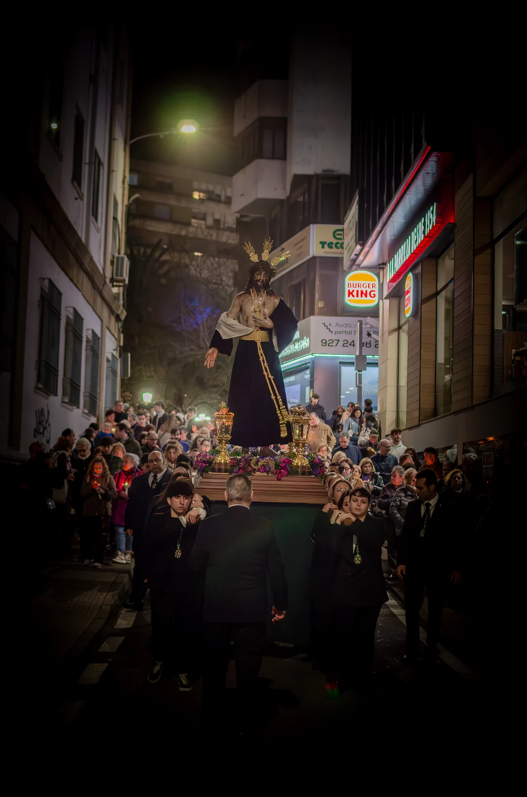
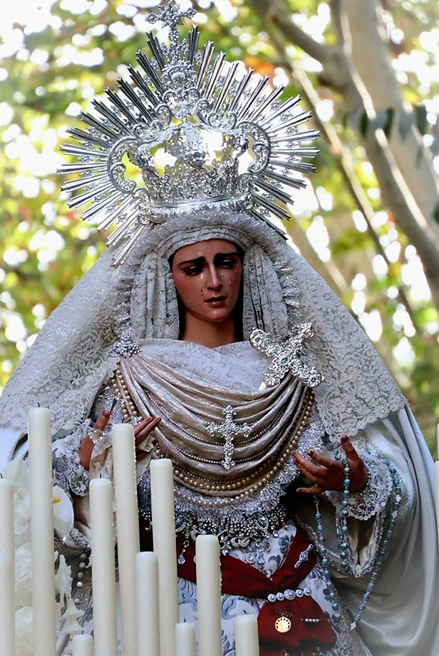

La devoción más allá de la Semana Santa
Salidas devocionales
Dos citas de oración que acercan a nuestros titulares al barrio y a sus fieles.

Jesús de la Lealtad Despojado
Viacrucis
El viacrucis acompaña al Señor en una meditación comunitaria de su camino hacia la cruz.
Se celebra el sábado posterior al triduo, en una cita de oración y recogimiento que acerca al Señor y a la Hermandad a las calles de la feligresía.
Consulta la fecha de este año en la agenda de cultos.
Itinerario
Templo Parroquial de Nuestra Señora del Rosario de Fátima, Sanguino Michel, Argentina, García Plata de Osma, Gil Cordero, Eladia Montesino-Espartero, Gómez Becerra, Motril, Santa Joaquina de Vedruna, Obispo Jesús Domínguez, Gómez Becerra, Eladia Montesino-Espartero, Gil Cordero, García Plata de Osma, Argentina, Sanguino Michel, Templo Parroquial de Nuestra Señora del Rosario de Fátima.
María Santísima de la Pureza
Rosario matutino
El rezo de los misterios acompaña a María Santísima de la Pureza por las calles de la feligresía en una mañana de oración compartida.
Una salida cercana y serena que reúne a los fieles en torno a la Virgen y expresa públicamente la devoción mariana de la Hermandad.
Consulta la fecha de este año en la agenda de cultos.
Itinerario
Sanguino Michel, Argentina, García-Plata de Osma, Gil Cordero, Eladia Montesino, Gómez Becerra, Obispo Jesús Domínguez, Avda. Virgen de Guadalupe, San Pedro de Alcántara, Avda. de España, Gómez Becerra, Eladia Montesino, Gil Cordero, García-Plata de Osma, Argentina, Sanguino Michel.
